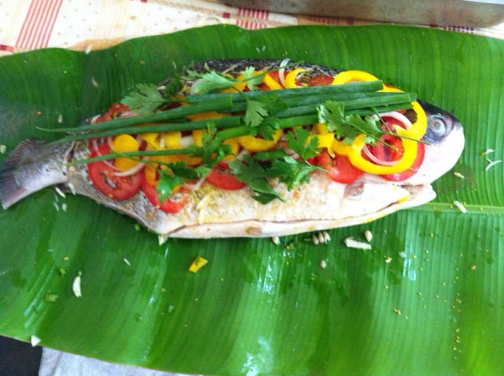
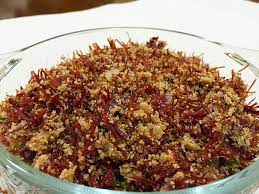
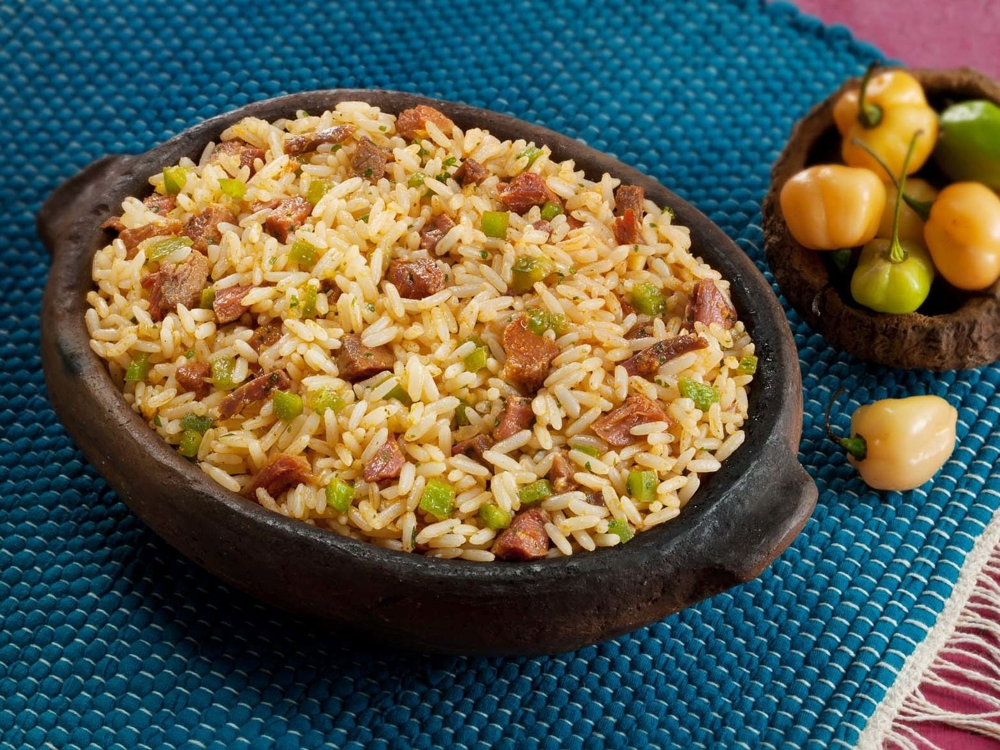
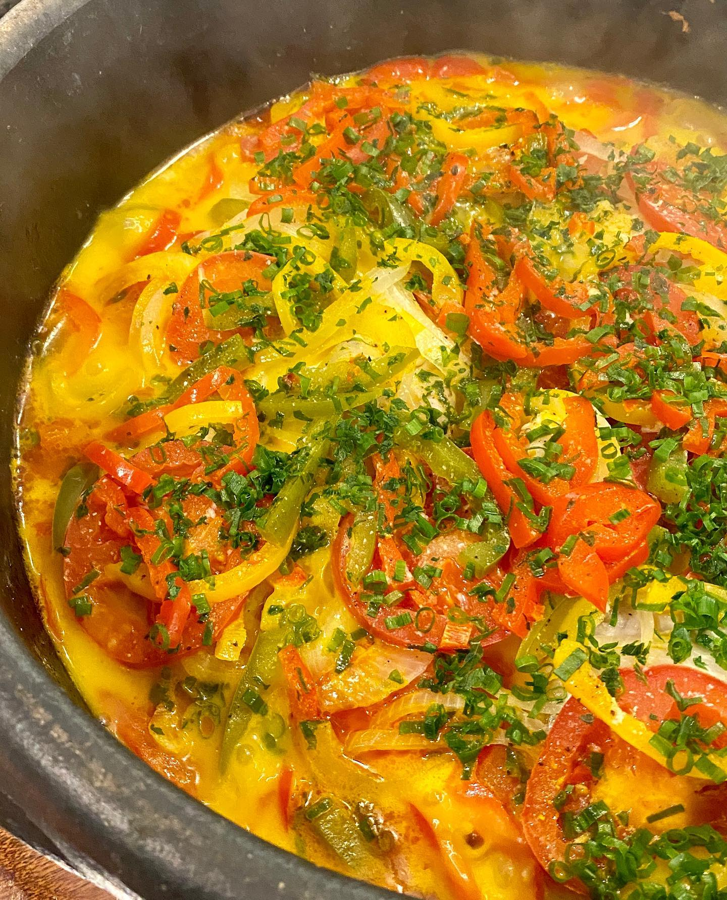
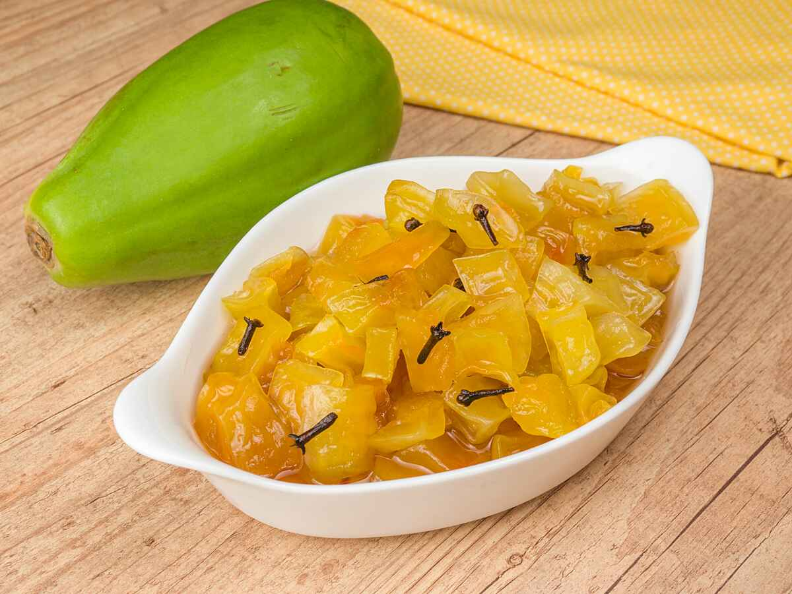

Receitas de Benedito Lambari

Arroz de Carne-Seca
Uma deliciosa combinação de arroz, carne-seca e temperos cuiabanos.

Peixe Assado na Folha de Bananeira
Um prato típico da região, o peixe é assado em folhas de bananeira com ervas e especiarias.

Paçoca de Carne-Seca
Uma paçoca cuiabana feita com carne-seca desfiada, farinha de mandioca e temperos.

Maria Isabel
Um prato tradicional com carne de sol, arroz e queijo coalho, muito apreciado na culinária cuiabana.

Moqueca de Pintado
Uma moqueca feita com o peixe pintado, coco, dendê e temperos regionais.

Vatapá Cuiabano
Uma versão regional do vatapá, feita com peixe e ingredientes locais.

Doce de Mamão Verde
Uma sobremesa tradicional feita com mamão verde, açúcar e especiarias.